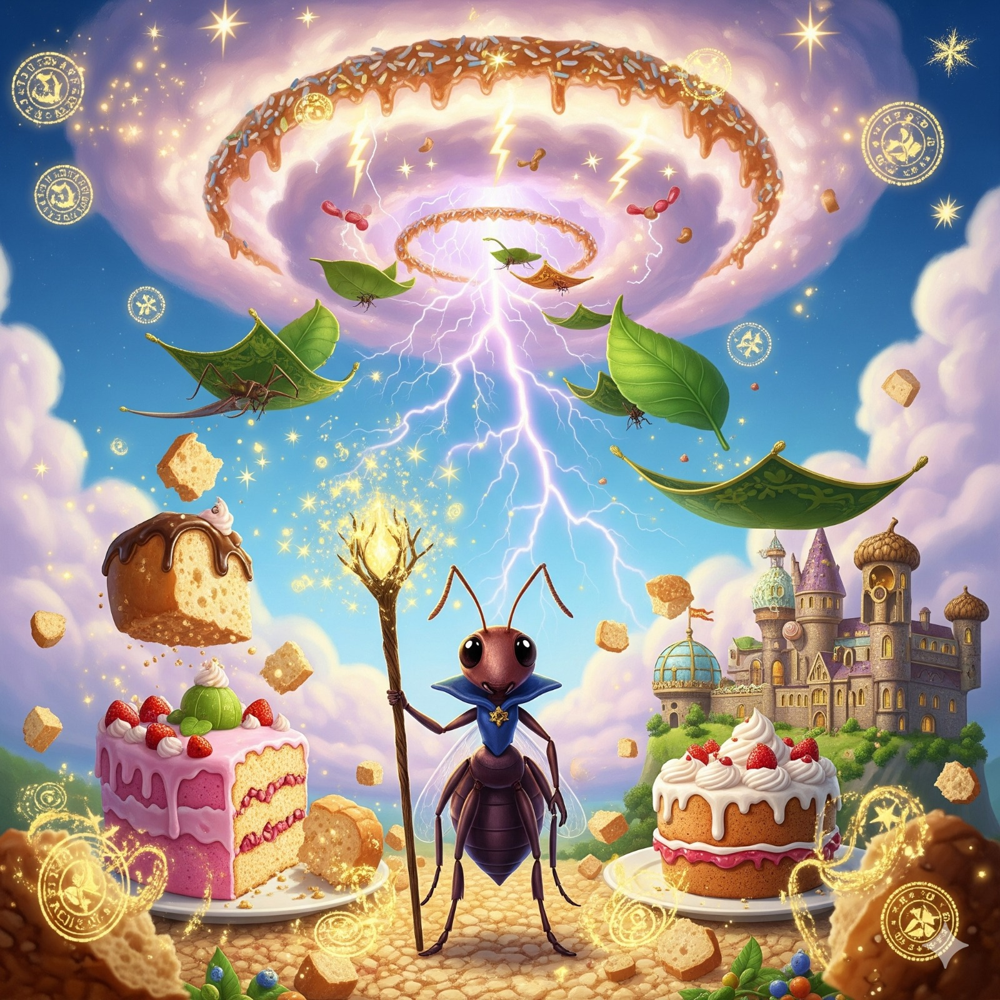

üßô Formiga descobre magia e vira feiticeira
No Multiverso 51-W, uma formiga comum chamada Luma encontrou um grão de areia cintilante enquanto carregava migalhas. Ao tocá-lo, descobriu que tinha despertado poderes místicos.
Agora conhecida como A Feiticeira do Formigueiro, Luma consegue transformar migalhas em bolos inteiros, folhas em tapetes mágicos e até convocar tempestades de açúcar refinado. Sua fama cresceu tanto que já recebeu convites para dar aulas em Hogwarts Paralelo, uma escola mágica só para insetos. “Meu objetivo é simples: garantir que nenhuma formiga do multiverso passe fome”, declarou Luma, enquanto conjurava um bolo de cenoura gigante para toda a colônia.
